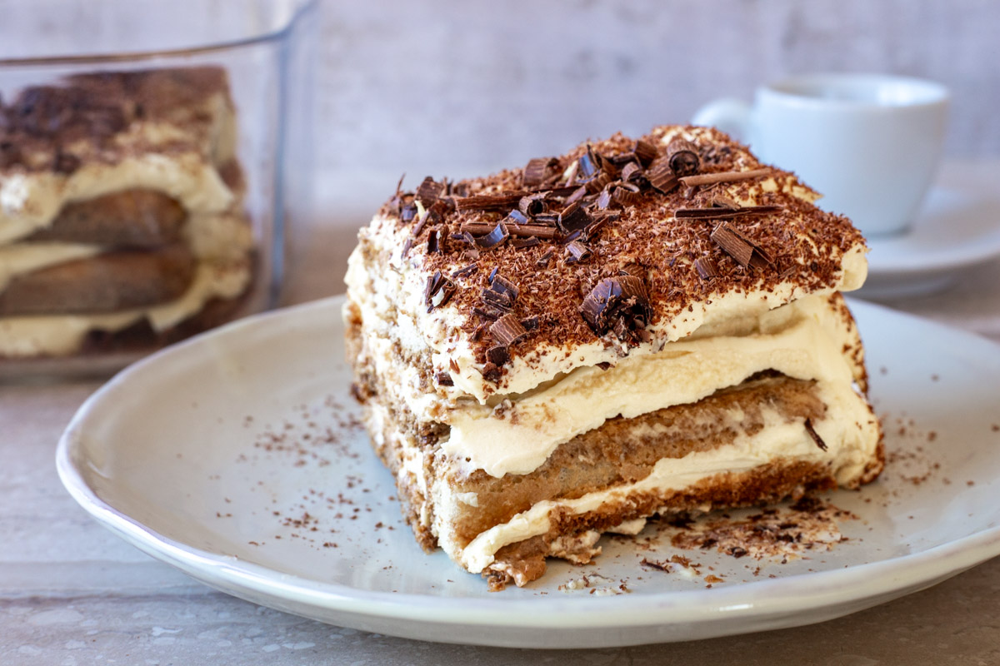

Tiramisu

Ingredients
- 200g ladyfingers
- 250g mascarpone cheese
- 2 cups coffee
- 3 eggs
- 100g sugar
- Cocoa powder for dusting
Preparation Time
30 minutes + chilling time
Instructions
- Brew strong coffee and let it cool.
-
Separate egg yolks and whites. Beat yolks with sugar until creamy, then
add mascarpone.
-
Whisk egg whites until stiff and fold into the mascarpone mixture.
- Dip ladyfingers into coffee and layer them in a dish.
- Spread mascarpone mixture over the layer and repeat.
- Dust with cocoa powder and chill for at least 4 hours.
Back to Italian Cuisine